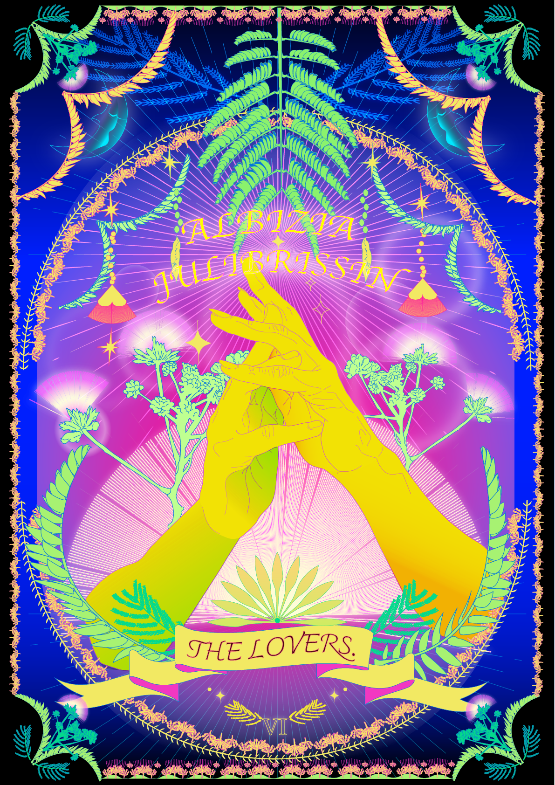
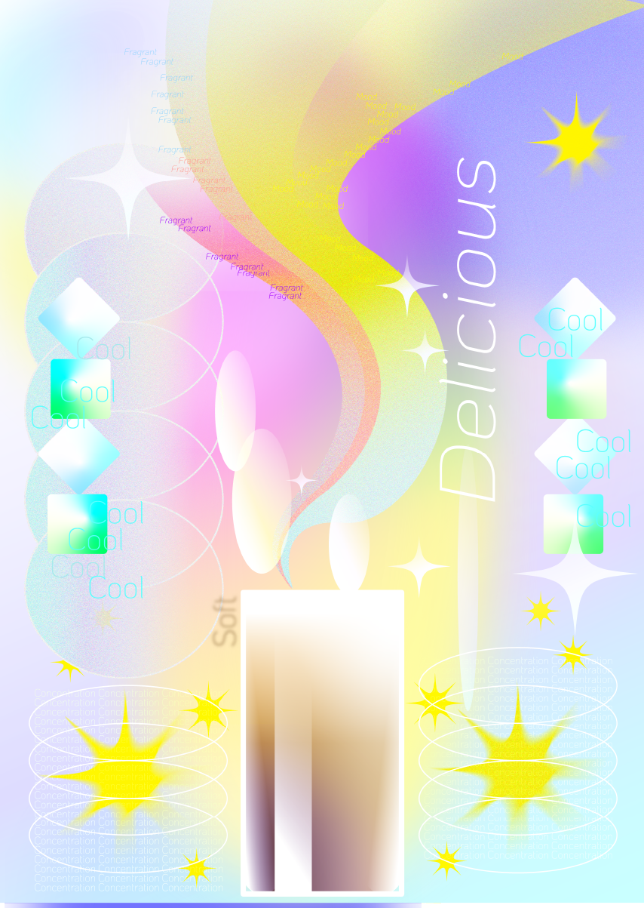

MAPPING YOUR TIME
VD1
여행 지도
지리적 것 만에서 벗어나 공간 대신 추억을 경험했던 것들을 나열한 지도. 짧고 굵은 여행의 경험을 나열하며 그 속에서 알 수 있는 나의 정보를 나타내고자 했다.
BOUND BOOK OF SCRAPS
VD1
편지
편지에 들어갈 수 있는 메시지를 감정별로 나눠 편지봉투에 수집하였다.
SHAPE POSTER
VD1
시간을 상징하는 동그라미
형태적으로도 특징적으로도 시간과 닮아있는 동그라미들을 모아 시간을 상징하는 동그라미를 표현한 포스터를 제작하였다.
MINIMALISM POSTER
VD1
자귀나무
특징적으로 생긴 꽃과 잎만 표현하며 자귀나무를 도형화, 상징화하여 표현했다. 꽃의 부드러운 질감을 시각적으로 느껴지게 포스터를 디자인했다.
MAXIMALISM POSTER
VD1

자귀나무
자귀나무의 잎이 가지는 가장 큰 특징인 수면운동을 표현하면서도 그 특징을 품고 있는 부부금실. 즉, 사랑을 주제로 잡아 타로카드를 표현했다.
5 PATTERN POSTERS
VD2

내가 좋아하는 것 중 디저트를 주제로 잡아 패턴화하여 표현했다.
EXHIBITION IDENTITY
VD2
abcd: abcd의 cd(시디)를 강조하기 위해 abcd 이용해 시디를 상징할 수 있는 연필을 만들고 그 사이에서 시디의 유대감을 나타냈다.
Play cd!: 시디가 신나게 노는 듯한 느낌을 cd와 음악의 느낌을 통해 나타냈다.
SELF IDENTITY
VD2
이 위치로 직접 가서 확인해보세요!